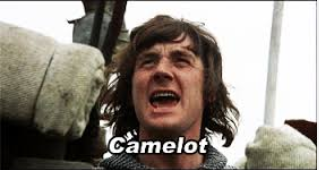
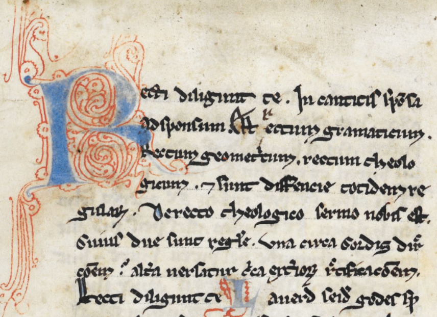

Text Analysis with Lexos
Computing for Poets
March 27, 2016
Scott Kleinman, California State University, Northridge / scott.kleinman@csun.edu
What is Text Analysis
My current definition:
(Computationally) finding quantitative patterns in natural language samples and attributing meaning to these patterns.
Text analysis is about collaborating with computers.
But what do we get when we collaborate with computers?


 |  |
 |  |
 |
|
Text Analysis Workflow 1
- Pre-Processing
- Statistical Processing
- Visualisation
- Narrative of Meaning
Pre-Processing
- Clean up OCR
- Remove metadata, punctuation, digits, stop words
- Transform tokens (consolidation, lemmatisation)
- Slicing and dicing
- Assigning labels
Pre-processing creates a "deformed" version of the original text for analysis.
Statistical Processing
- Token counting (e.g. characters, words, n-grams)
- Normalisation (e.g. to compare texts of unequal size)
- Frequency/Probability Comparison (e.g. between the number of times a word occurs in two texts)
- Clustering (identifying groups of tokens/texts with common statistical properties)
- Shape quantitative information about the texts for visualisation/interpretation.
Statistical processing transforms the text from natural language to quantitative data. This type of “deformance” typically involves dimensionality reduction, a simplification of the data so that it can be represented in two-dimensional space.
Visualisation
- Arranging quantitative data in graphical format to make it (hopefully) more interpretable than formats in which the data is stored.
- Visualisation is “the reification of misinformation” (Johanna Drucker), so it requires a clear account of the procedures used to make the graph and critical literacy about how to interpret visualisations on the part of the reader.
Narrative of Meaning
- An account of the significance of the results of text analysis.
- Must include an account of the decisions made as part of pre-processing, statistical processing, and visualisation.
Text Analysis Workflow 2
- Re-consider some of the decisions you have made.
- Repeat Text Analysis Workflow 1.
Useful Terminology
- Document: a whole text or a segment of a text.
- Token: an individual occurrence of a countable item in a document (typically a word).
- Term (also Type): A distinct form of a token that may occur one or more times in a document.
- Lemma: The “dictionary headword” form of a token without morphological or spelling variants.
- Bag of Words: Set of tokens or terms lacking their order or placement in the original source text(s).
- Document-Term Matrix (DTM): A table showing the number of times each term occurs in each document.
Sample Document-Term Matrix
| Term 1 | Term 2 | Term 3 | Term 4 | ... | |
|---|---|---|---|---|---|
| Document 1 | 50 | 27 | 3 | 12 | |
| Document 2 | 75 | 3 | 1 | 1 | |
| Document 3 | 64 | 1 | 1 | 1 | |
| Document 4 | 31 | 12 | 5 | 10 | |
| ... |
A Basic Epistemological Question
If each stage is a transformation (“deformance”) of the source text, how do we relate the results of this transformation to the original?
Lexos and Lexomics
Lexos is an easy-to-use tool that handles many the basic tasks in a typical text analysis workflow.
Lexos arose from the Lexomics project, which seeks to use computational approaches to study patterns in literature. Literature and computer science students work alongside one another doing research and developing tools in response to questions generated by the research.
How to Use Lexos Online
http://lexos.wheatoncollege.edu/You can download the TestSuite files at http://bit.ly/22FT3Hg.
Observing the Influence of Orthography in Middle English
(Scroll down)
- Source Texts: In the
Middle Englishfolder - Purpose: Determine what effect orthography has on document similarity.
Background
- Middle English is characterised by a high number of dialectal features and spelling variations, which can create challenges for computational processing and make comparison difficult.
- The AB language is a term coined in 1929 by J.R.R. Tolkien to refer to the standardised language of two manuscripts of Ancrene Wisse, a guide for anchoresses.
- The language is shared by a group of texts from the English West Midlands including Hali Meiðhad ("Holy Maidenhood"), Sawles Warde ("Refuge of the Souls"), and a life of Saint Juliana.
- The Lambeth Homilies is a collection of sermons which also comes from the West Midlands but does not share the AB language forms. The Kentish Sermons come from southeastern England.
- In order explain the dendrogram we get if we compare these texts, it is useful to get a sense of the relative prominence of certain words.
Instructions
- Go to Manage > Upload. Click Browse and navigate to the
MiddleEnglishfolder. Upload all the texts. - Go to Analyze > Clustering > Hierarchical Clustering.
- Enter a Dendrogram Title and click Get Dendrogram. You may need to scroll down to see the result. Notice that the West Midland texts (Ancrene Wisse, Sawles Warde, Juliana, Hali Meiðhad, and the Lambeth Homilies) are split into two clusters. The Kentish Sermons seem to be closer to the Juliana group. How do we know what accounts for this?
- Go to Visualize > MultiCloud. Click Toggle All to select all the texts. Then click Get Graphs. You may need to scroll down to see the result.
- Are there spellings that seem to dominate certain texts? You can drag and drop clouds to re-order them for easier comparison.
- Try the Word Cloud and BubbleViz tools in the Visualize menu for further insight. Can you identify what might be affecting the clustering algorithm?
Instructions (Continued)
- Go to Prepare > Scrub. Click on the chevron next to consolidations and enter
þet,þat:þat ant,and:and
Click. Apply Scrubbing. This will consolidate spelling variants of these words into one form each. - Go to Analyze > Clustering > Hierarchical Clustering and click the Get Dendrogram button.
Notice that all the West Midlands texts form a single cluster. There is a good chance that the Kentish Sermons most closely resemble the Lambeth Homilies because they share a common genre (sermon). However, the clustering algorithm seems to be more sensitive to the dialectal orthography than to the genre.
Using word clouds, we have been able to identify what disrupts this pattern in order to obtain clearer results.
Uses of Word Clouds for Document Exploration
- Get an impression of the content of your documents.
- Identify Stop Words or Other Scrubbing Needs.
- Useful way of conveying token prominence in presentations.
- Can be used to visualise the topics in a topic model (see Visualizing Topic Models below).
The Pride and Prejudice Experiment
(Scroll down)

Source: Lilly Library, Indiana University
- Source Text: In the
PrideAndPrejudicefolder - Purpose: Examine or compare the frequency of terms over the course of a text.
Background
A common task in text analysis is to observe changes in linguistic usage over the course of a text or collection. The Lexos Rolling Windows tool creates a visualisation of these changes.
For this experiment, we will use a version of Jane Austen's Pride and Prejudice with milestones added at each chapter break. Milestones are strings of text used by Lexos to identify structural divisions. Although we have used chapters, you can place them anywhere in the source text(s).
Rolling Windows
- Traces the frequency of features within a designated window of tokens over the course of a document.
- Can be used to identify small- and large-scale patterns of usage of individual features or to compare these patterns for multiple features.
Experiment 1:
- Go to Manage > Upload and upload pride_and_prejudice_ms from the
PrideAndPrejudicefolder. This file has the string Milestone inserted at each chapter break. - Go to Rolling Windows and select the options represented below:
Count Type: Rolling Average
Unit of Window: Window of Words
Unit of Token: of Word(s)
Size of Rolling Window:
Document has Milestones
Milestone Delimiter:
Enter a word or words you wish to search.
Experiment 2:
- Go to Prepare > Scrub
- Upload or copy and paste the Glasgow stop word list. Click the Apply Scrubbing button.
- Repeat Experiment 1.
What changes? Why?

Visualizing Topic Models
- Source File:
Lexos/TestSuite/malletfile/Beowulf_1200-word-topic-counts - Purpose: Examine or compare the frequency of terms over the course of a text.
Topic modelling is a machine learning technique to reverse engineer the "themes" of documents in the form of lists of words (called "topics"). The most common implementation tool is Mallet, but its output is notoriously difficult to visualise. The Lexos MultiCloud tool allows you to upload the Mallet data directly to generate "topic clouds"—word clouds based on your topics. It even allows you to convert your topics to documents and cluster them.
The sample Mallet files contain a topic model of the Old English poem Beowulf.
For further information topic clouds and how to generate them, see How to Create Topic Clouds with Lexos and How to Create and Cluster Topic Clouds in Lexos.
Other Lexos Functions
- Download Scrubbed and Cut Files
- Download Workspace for Later Upload
- View or Download Your Document-Term Matrix
- Generate Statistics about Your Corpus
- K-Means Clustering (Forces documents into a set number of topics)
- Select tool to manage active documents (Beta)
- "Topwords" statistical tests for most prominent words (Beta)
THE END
Made with Reveal.js